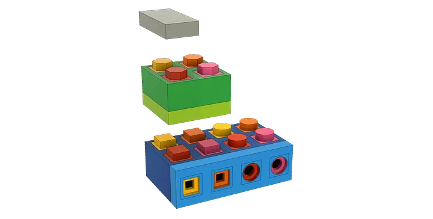
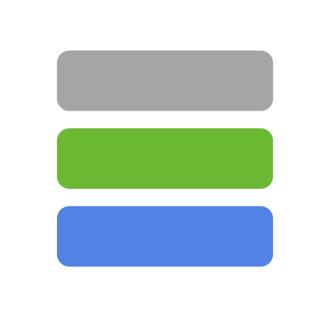

Tengstrand's Blog
The search for simpler code while having fun.
The search for simpler code while having fun.
Today I'm proud to announce a new software architecture, called Polylith!1
I hope that Polylith can have a positive affect on the software industry, by focusing on simplicity and developer happiness and efficiency.
Let’s start from the beginning. Two years ago I finally had the chance to work full time with the functional language Clojure and the functional database Datomic. I had read a book, blogged and played around with the language for a while, but now it was time to leave 20 years of Java behind me.
I joined a small team with one developer, a team leader and a UX designer. Even though only the team leader and I had any previous experience with Clojure and very little experience with Datomic, the whole team was up and running quickly and very soon became a hyper productive Dream Team!
A fantastic thing about Clojure is its REPL. It allows you to work much faster compared to “up front” compiled languages like Java. Instead, it compiles the code incrementally. The result is lightning fast feedback, where you have direct access to all your data and compiled code. Once you have tried it, you will never look back!
After a month I questioned why we still had a Microservices architecture. It slowed us down because we now had a bunch of REPLs instead of just one, and it also added a lot of boilerplate code and unnecessary complexity.
One morning on the train to work I got that eureka moment that you may get once in a lifetime. I realised that the solution was to turn the development environment into a monolith using symbolic links2 to each "component"! This little trick worked out well and now we had our single REPL back again!

The three building blocks of PolylithTwo years have passed and we still love this way of designing systems. The components have become our friends that are easy to understand, reuse and combine into deployable systems. The tool helps us test and build our systems incrementally both locally and on the continuous integration server.
It’s not just efficient and fun, it has changed the way we think about design at the system level.
If this has made you curious, then head over to our high-level documentation to find out more.
Happy coding!
Joakim Tengstrand
The predecessor to Polylith was called Micro Monolith, and if you look closely you will also notice that the logo has changed since this was posted:

↩Since October 2020, the new poly command line tool uses tools.deps instead of symbolic links. ↩
Published: 2018-10-02
Tagged: architecture clojure polylith